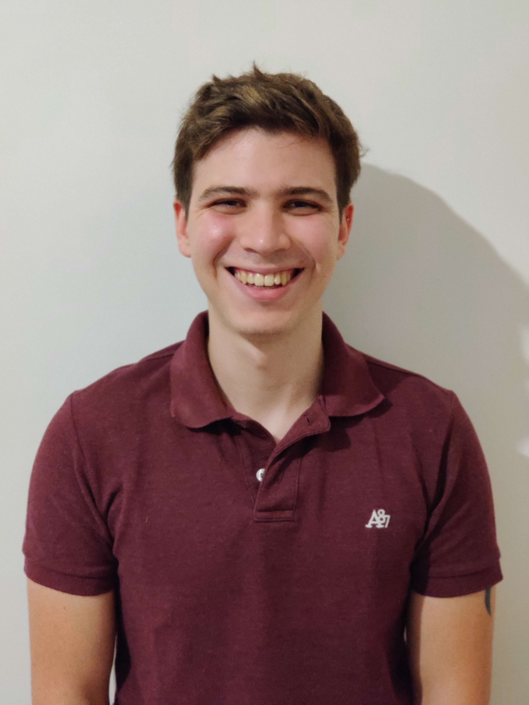

Bienvenido a mi Portfolio
Soy Facundo Shlamovitz, estudiante y programador. Me considero una persona responsable, ordenada, proactiva, y siempre busco tomar la iniciativa. Actualmente me encuentro trabajando como desarrollador BackEnd.
Sobre Mí
Soy estudiante de Licenciatura en Desarrollo de Videojuegos en la Universidad Argentina de la Empresa. Durante mi formación, he desarrollado habilidades en programación y software, con un enfoque en la creación de juegos y aplicaciones web.
Además de mis estudios, tengo experiencia como desarrollador en DIGIP, donde trabajé en la creación de páginas web, desarrollo de funcionalidades para aplicaciones web, y microservicios.
Mi objetivo profesional es aplicar mis conocimientos en un entorno laboral que me permita seguir aprendiendo y contribuyendo al desarrollo de soluciones tecnológicas innovadoras.